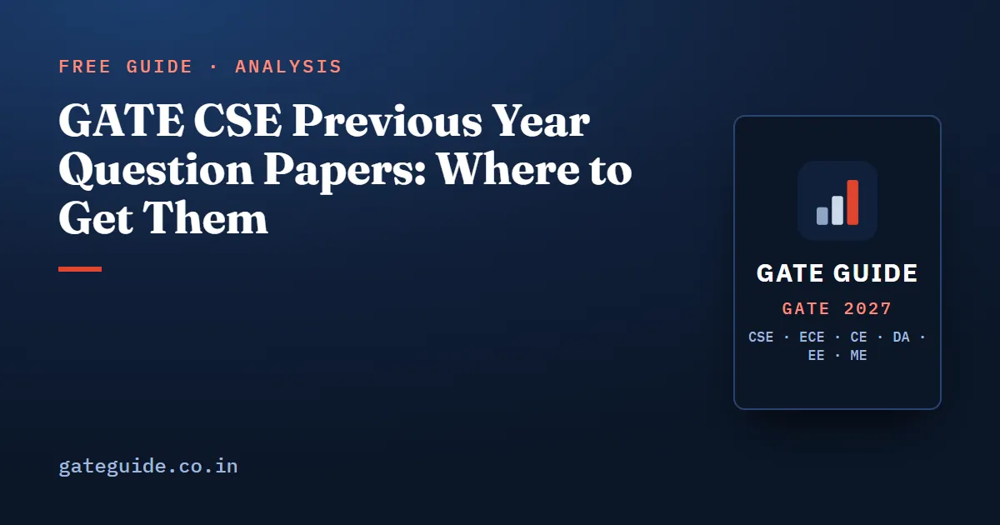

GATE CSE Previous Year Question Papers: Where to Get Them

Every GATE CSE previous year question paper you need is free and legal to download, and the best copy is the official one. The GATE 2027 Downloads page carries year-wise papers with official answer keys and links a bulk archive of older papers, and the official Information Brochure confirms that previous year question papers will be accessible through the GATE 2027 website. Public archives add what the official files do not: topic tags, discussion and chapter-wise grouping.
In this guide
Key takeaways
- Start official. gate2027.iitm.ac.in has the Downloads page with question papers and official answer keys, including a bulk folder of older papers.
- Score against the official key, not a coaching solution. Keys are revised after the challenge window each year.
- Use public archives for tagging, not for keys: GATE Overflow, ExamSIDE and PracticePaper group the same questions by topic and chapter.
- Do not download pirated books or solution manuals. The papers themselves are free; nothing you need requires a torrent.
- Papers from 2021 onwards match the current MCQ, MSQ and NAT mix. Older papers are for concepts.
- A paper is worth three sittings: solve it timed, redo it without options, then rework the questions you got right slowly.
Where the papers actually are
| Source | What it covers | Best for |
|---|---|---|
| GATE 2027 Downloads page (official) | Year-wise question papers and official answer keys for recent years, plus a linked bulk archive of older papers from 2007 onwards | The authoritative PDF and the official key |
| GATE hub at IISc Bengaluru (official) | Links through to the current GATE portal's previous question paper section | Finding a year's papers when a direct link has moved |
| GATE Overflow | GATE CSE questions from the late 1980s to 2026, with official keys and topic tags | Topic-wise solving and answer discussion |
| ExamSIDE | Chapter-wise GATE CSE previous year questions | Practising one chapter end to end |
| PracticePaper | Topic-wise GATE CSE previous year papers | A second topic-wise grouping to cross-check |
Two notes on the unofficial archives. They are useful because they do the tagging work for you, but their topic labels are somebody's judgement, and borderline questions land in different places on different sites. Treat a tag as a hint, not as a fact. And where an archive's answer disagrees with the official key, the official key wins.
What the archive actually contains
| Period | Papers or sets | Pattern | What it is good for now |
|---|---|---|---|
| 2000–2009 | 10 | 150 marks, then 100 in 2009; no General Aptitude until 2010 | Concept coverage and long-term recurrence |
| 2010–2013 | 4 | 65 questions for 100 marks, all MCQ | Clean MCQ practice, subject weightage |
| 2014–2017 | 10 sets | Online test, NAT introduced in 2014, new syllabus from 2016 | NAT practice and set-to-set variance |
| 2018–2020 | 3 | Single session each year, MCQ and NAT | Current-style numericals |
| 2021–2026 | 10 papers or shifts | MSQ introduced in 2021, revised syllabus | The closest match to the 2027 format |
That is 37 CS papers and sets across 27 examination years. The 2027 paper will be the 38th, and the first under the 2027 syllabus.
Old papers are not wasted effort. Several concepts from the 2000–2005 era reappeared almost unchanged after 2015: the number of tables produced by an ER diagram, the maximum file size derivable from an inode structure, and the probe sequence of a hash table under linear probing.
Filter before you solve
Three syllabus revisions have removed topics, so some old questions are no longer worth your time:
- 2016: Software Engineering, Web Technologies, Information Systems and Numerical Methods left the syllabus.
- 2021: IPv6, Wi-Fi basics and network security were removed.
- 2027: Computer Networks lost the OSI and TCP/IP stack enumeration, framing, Ethernet bridging, shortest-path and flooding routing, ARP, DHCP, ICMP, UDP, SMTP, FTP and email from explicit mention, and COA dropped main memory and secondary storage, which makes disk geometry low priority.
Keep the official CS syllabus PDF open while you solve, and skip anything that no longer maps to a clause. The year-by-year list is in out-of-syllabus topics in old GATE CSE papers.
A method for working through one paper
Downloading 37 papers takes five minutes. Extracting the value from one takes about five hours. Here is the sequence that gets the most out of each paper.
1. Solve it cold, timed, in one sitting. Three hours, an on-screen calculator, one sheet of rough paper, no phone, no notes. A paper solved in pieces across a week teaches you nothing about the three-hour problem.
2. Mark your confidence before you check anything. Next to each question write C for certain, G for guessed, S for skipped. This is the single most useful column in the whole exercise, because the gap between "certain" and "correct" is where your real score lives.
3. Score with the official key and the real marking scheme. Apply negative marking honestly: minus one-third on a wrong 1-mark MCQ, minus two-thirds on a wrong 2-mark MCQ, nothing on MSQ and NAT. A raw count of correct answers flatters you.
4. Sort the paper into four piles.
| Pile | What it means | What to do |
|---|---|---|
| Certain and correct | Solid | Move on |
| Certain and wrong | The dangerous pile | Find the misconception, not the arithmetic slip |
| Guessed and correct | Luck | Treat as wrong; learn it properly |
| Skipped or wrong | Known gap | Tag it and schedule it |
5. Tag every question in piles 2 to 4 by concept, not chapter. "Operating Systems" is useless. "SRTF average waiting time with staggered arrivals and a context-switch cost" is a thing you can drill. Keep one running sheet of these tags across all papers; the tags that repeat are your syllabus.
6. Redo the paper without the options. A week later, cover the four choices and solve every MCQ as though it were a NAT. This is the closest thing to free extra questions, and it kills the habit of reverse-engineering from the options, which does not work on a NAT.
7. Change one condition and solve again. Since 2021, papers have asked familiar concepts in unfamiliar settings: a dynamic programming recurrence with an extra constraint, a graph algorithm with a modified rule, a scheduling policy with a twist. So when a question is done, change the cache from direct-mapped to 4-way, make the quantum smaller, add a negative edge, and work it again. This is the habit that separates candidates who have seen a concept from candidates who own it.
8. Save recent full papers for timed rehearsal. Take 2021 onwards under exam conditions late in your preparation. How to score and review a full attempt is in GATE CSE mock tests: how to take and analyse them.
What to do with the tags
After eight or ten papers your tag sheet will have a few hundred entries, and a clear head: some concepts appear in almost every paper, some have not appeared since 2017, some are named in the 2027 syllabus but barely tested. Ranking that list is the whole game, and how to use GATE CSE previous year papers sets out the weighted method.
If you would rather start from the finished ranking, the book does this across all 27 years: 216 concepts scored on frequency, recency, breadth and syllabus centrality, a ranked Top 100 with the evidence behind each rank, and 1,120 practice questions built around the recurring variants. See what the full book covers. A free starting point is important questions for GATE CSE 2027, which sets out the evidence method and a short ranked sample.
Confirm the syllabus and every date at gate2027.iitm.ac.in. GATE Guide is an independent site and not connected to IIT Madras or the GATE office.
Frequently asked questions
Where can I download GATE CSE previous year question papers for free?
Start with the Downloads page of the official GATE 2027 website, which carries year-wise question papers and official answer keys for recent years plus a bulk archive covering older papers. The official Information Brochure also states that previous year question papers will be accessible through the GATE 2027 website.
How many years of GATE CSE papers are available?
The official GATE 2027 Downloads page links a bulk archive covering papers from 2007 onwards, with recent years also listed individually alongside their answer keys. Public question archives go back further, to the late 1980s, but those very old papers follow syllabi and patterns that no longer apply.
Are official answer keys available for GATE CSE papers?
Yes. The GATE 2027 Downloads page publishes answer keys next to the question papers for recent years. Always score yourself against the official key rather than a coaching solution, because a small number of questions each year are revised or dropped after the challenge window closes.
How many GATE CSE previous year papers should I solve?
Solve topic-wise from the whole archive first, then take complete papers under timed conditions. Papers from 2021 onwards are closest to the 2027 format because they include MSQ questions. Older papers are still useful for concepts, once you exclude topics removed in 2016, 2021 and 2027.
Are GATE CSE questions repeated?
Concepts repeat far more than wording. Several ideas from the 2000 to 2005 papers, such as counting tables from an ER diagram or the maximum file size from an inode, reappeared in near-identical form after 2015. Exact repetition of a question is rare, so practise the variants of a concept rather than memorising answers.
Should I use topic-wise or year-wise previous year papers?
Both, in that order. Topic-wise practice puts every variant of one concept side by side and builds pattern recognition fastest. Full papers under exam conditions come later, when you need to train the three-hour attempt order, the MCQ, MSQ and NAT mix, and your tolerance for questions you cannot solve.
Sources
- GATE 2027 official website (IIT Madras)
- GATE 2027 downloads, question papers and answer keys (official)
- GATE 2027 Information Brochure (official PDF)
- GATE 2027 CS syllabus (official PDF)
- GATE Overflow, GATE CSE question archive with official keys and topic tags
- ExamSIDE, chapter-wise GATE CSE previous year questions
- PracticePaper, topic-wise GATE CSE previous year papers
- GATE at IISc Bengaluru, hub linking previous GATE question papers
Dates, fees and the syllabus are set by the GATE 2027 organising institute and can change. Always confirm at gate2027.iitm.ac.in.